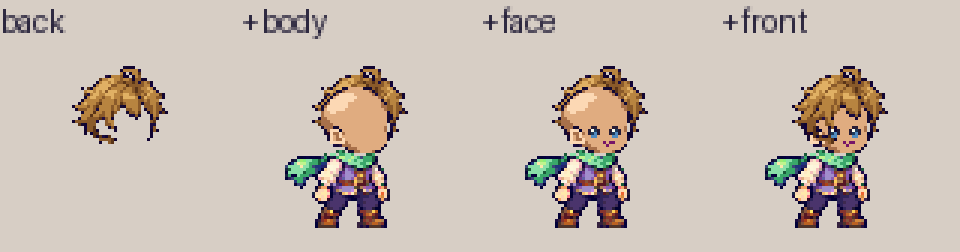
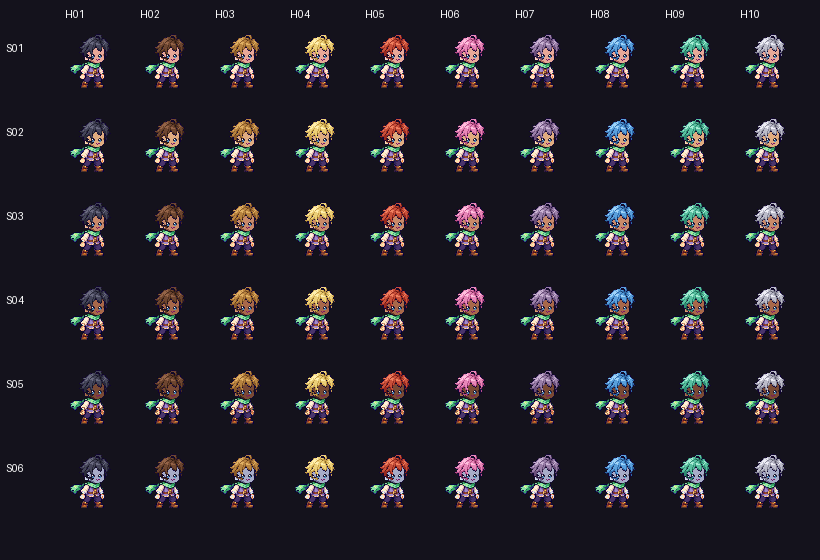
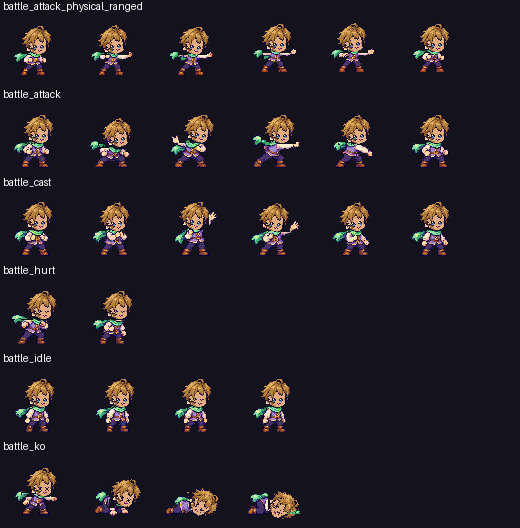
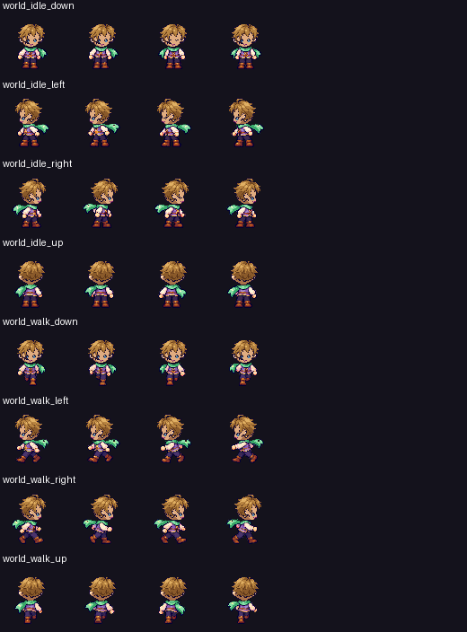
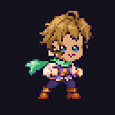
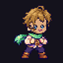
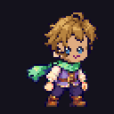
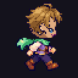

Old proof rejected. Open rebuild v003 — new proof
Human v002 + Hair01 + Face01
Proof only; remaining styles/faces/races wait for review. All colours from appearance.ts.
Battle 2x · World 2x · Colours 2x

6 skin x 10 hair colours (1x)

All poses


Animations
battle_attack_physical_ranged
battle_attackbattle_cast
battle_hurtbattle_idle
battle_koworld_idle_downworld_idle_leftworld_idle_rightworld_idle_upworld_walk_downworld_walk_leftworld_walk_right
world_walk_up